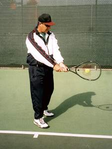
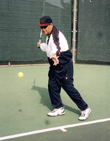

Concentration¶
By Michael Friedman, USPTA¶
When my students ask me what is concentration on the tennis court, this is the story I tell them. When I was growing up on the courts of Los Angeles and someone would say to me "come on CONCENTRATE!" I would see the word imprinted on the side of an orange juice can, frozen in time and space. I really had no idea what it meant. Over my many years of playing and teaching tennis I have come to understand what I think concentration truly is. And it is much more than "Watch the ball!" Concentration is the direct link between what the eyes see and how the body, feet, and hands REACT, JUDGE, and TIME the ball. Of course the ball is what we as tennis players must focus on but in the correct state of mind.
 As a kid, when I was told to concentrate, all I could picture was a can of frozen orange juice with the word plastered across it in capital letters.
As a kid, when I was told to concentrate, all I could picture was a can of frozen orange juice with the word plastered across it in capital letters.
In order to focus your thoughts and perform at your best you have to tell yourself what to think about, rather than what not to think about. For instance, if you tell yourself not to think about a pink elephant, it would be difficult to get a pink elephant out of your thoughts. I once heard it described as "There is always a party going on in my head!" That may be so, but learning to control that party will make you a better player. So, rather than telling yourself what not to think, such as, "I only have to win two more points and I'll win the set!", learn to focus on the task at hand. This can be accomplished through a series of questions you can ask yourself and answer very quickly.
By playing one shot at a time and concentrating on that one shot, you can develop a more focused sense of concentration on the court and learn to perform at your very best.
Concentration, How Does it Work?¶
Concentration in tennis has two basic functions, 1) to prepare you to play the point and 2) to focus during the point, which combines ball flight recognition and strategy.
Ball Flight Recognition is the ability to judge when and where the ball is going to be in your contact point. Every ball goes through the contact point three times.
-
Before the bounce, as in Agassi's swinging volley.
-
After the bounce, taking the ball on the rise.
-
On it's way down before the second bounce.
The contact point is a point in space where you can comfortably hit the ball. This, like the strike zone in baseball, is somewhere between the shoulders and knees.

Establishing the Contact Zone¶
Without the ball, swing your racquet and stop it at the contact point. Try it first with your eyes open, then with your eyes closed and see if it is in the same position. Once you have established a comfortable contact zone in terms of the balls height, distance from your body, and the timing of when your racquet face is parallel to the net, look at the distance that spot is from your feet. When moving to the right (toward the right-hander's forehand), judge the contact point with your right foot, whether you hit with an open stance or you step into the ball with your left foot. Moving to the left (the right-hander's backhand), judge the ball with your left foot so you have room to step in with your right foot. The back foot is the foot that judges the contact point.
Here is a drill to practice Ball Flight Recognition. Every time your opponent hits the ball, ask yourself these three questions: What is it? Where is the bounce? When do I hit?
What is it?¶
This question will help you REACT to whether it is coming to your forehand or backhand. Watch the ball BEFORE your opponent hits it, so you can answer the question as early as possible. By seeing the ball come off the racquet, you can start your preparation before you move your feet.
Where is the Bounce¶
This will help you JUDGE where to go before you move your feet. Predicting where the ball is going to bounce will help you determine whether to attack the ball by taking it in the air or on the rise, or to play it in the more comfortable contact point when the ball is coming down towards the second bounce. More times than not I see players getting too close to the ball rather than too far away from it. By too close I mean the back foot is too close to the ball, a common problem for beginners. Hence, instead of allowing the ball to come down to them they are forced to make contact high above the strike zone. More often than not, the result is an awkward stroke and a weak return.

For the forehand, use the back foot to judge your contact point.When do I hit?¶
This will help you TIME the ball. Timing is the element that not only determines the direction of the ball, but it also determines the depth of the ball. If a right hander swings too soon on the forehand the ball will go to the left, too late and it goes to the right. If you swing too soon the ball will land short or in the net, too late and it will go deep or long!
After finishing your swing, keep your eyes on the contact point then pick up the ball heading towards your opponent's racquet and ask yourself again ...What is it? Most beginner and intermediate players look up too soon and don't complete the shot by keeping their head down. They are more interested in looking to see if their shot is going in, or if their opponent is going to get to it. Some just stand like statues admiring their shot! If you are watching the ball before your opponent hits it and are asking yourself, What is it?... you are in the right state of mind!
This all happens very fast, but as you get better time seems to stretch or slow down and you will find you do have the time to REACT, not anticipate, JUDGE, not move before you know where you are going, and TIME your contact point, the only time you can control the ball!
Use these questions to prepare yourself for upcoming matches, they will help you concentrate from the moment you step onto the court right through the warm-up and the first few points. Then, during critical moments of a game, set and/or match it will be easier to rely on the system. So when it comes to crunch time and the pressure builds or when fatigue sets in the latter stages of a match, maybe this time it will be your opponent who cracks.